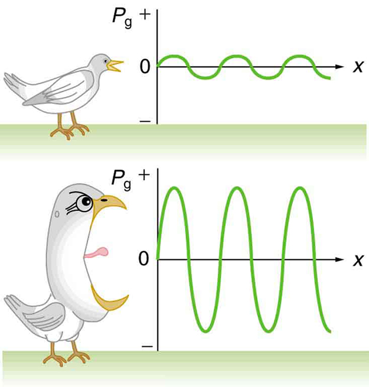
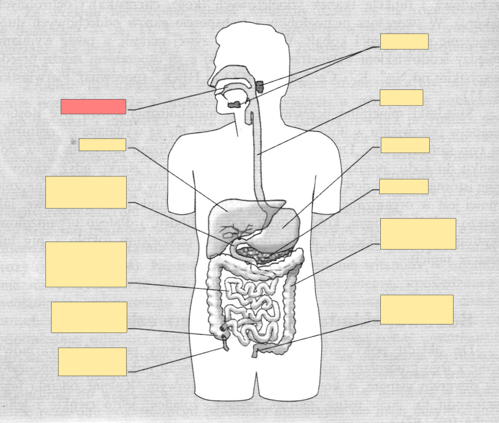
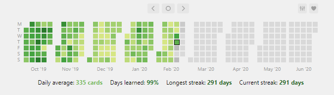

Pamięć w służbie ucznia
Potencjał technik uczenia się w edukacji
Ten tekst oryginalnie miał być częścią publikacji pokonferencyjnej, która nigdy się nie ukazała, dlatego jest napisany bardziej formalnie niż inne teksty tutaj zebrane.
1 Wprowadzenie
Obserwator rzeczywistości polskiej szkoły może zauważyć niepokojące, coraz powszechniejsze zjawisko wypalenia szkolnego wśród uczniów, u podstaw którego leży m.in. nadmierne obciążenie materiałem (Cymerman & Tomaszek, 2017). Systemowe zmniejszenie tego obciążenia, jakkolwiek pożądane, nie może zostać przeprowadzone przez pojedynczego nauczyciela, który zajęcia prowadzi zgodnie z podstawą programową. Sądzę jednak, że istnieją sposoby, które mogłyby pozwolić ograniczyć siłę wypalenia, a których wdrożenie do praktyki edukacyjnej zależy w całości od ucznia. Nie jest w końcu możliwe, jak wskazuje Leitner (1972), by nauczyciel wlał uczniowi wiedzę do głowy, przyswojenie materiału jest, według tego autora, zadaniem ucznia. Takie też założenie przyjmuję tutaj.
Leitner (1972) określa zadania nauczyciela, a wśród nich przedstawienie uczniowi skutecznych metod uczenia się. Uważa to również za zadanie najbardziej zaniedbane. Pomimo, że jest to opinia wyrażona ponad pół wieku temu, uważam, że w polskiej szkole XXI wieku jest ona ciągle aktualna. Daleki jednak jestem od wysuwania oskarżeń w kierunku nauczycieli – niewątpliwie jest to zadanie trudne. Dające się znaleźć w Internecie (czy nawet w przeznaczonych specjalnie dla uczniów materiałach) porady są często bardzo trudne do zastosowania, wzajemnie się wykluczające się czy wręcz utrudniające proces nauki. Sądzę, że wyposażenie uczniów w skuteczne techniki uczenia się, może nie tylko zwiększyć ich długoterminową skuteczność, która jest kluczowa w systemie edukacji opartym o egzaminy, ale także zmniejszyć ryzyko wypalenia szkolnego.
W tym artykule staram się stworzyć definicję technik uczenia się, przytaczam ogólne prawidłowości, na których powszechnie opierają się konkretne techniki oraz trzy takie techniki omawiam – pałac pamięci (metodę miejsc; loci), metodę Feynmana oraz fiszki elektroniczne z wykorzystaniem programu Anki. Zaczniemy od refleksji na temat definicji technik uczenia się.
1.1 Czym są techniki uczenia się?
W swojej definicji technik uczenia się nawiązuję do koncepcji taksonomii Blooma (1956), czyli klasyfikacji celów nauczania. Pojęcie „technik uczenia się” często utożsamiane jest z pojęciem „mnemotechnik”. Nie mniej mnemotechniki odnoszą się wyłącznie do pierwszego elementu taksonomii, tj. zapamiętywania. Rzeczywiście, takie metody jak pałac pamięci nie mają na celu zwiększenia zrozumienia, zdolności wykorzystywania, analizy, syntezy czy ewaluacji informacji, jednak moja analiza wskazuje, że istnieją techniki, jak omówiona niżej metoda Feynmana, które największy nacisk kładą na cele inne niż zapamiętywanie. Dlatego też proponuję następującą definicję:
Techniki uczenia się – usystematyzowane działania dążące do zwiększenia poziomu zapamiętywania, rozumienia, zdolności wykorzystywania, analizy, syntezy i/lub ewaluacji informacji, oparte na wiedzy na temat procesów poznawczych człowieka.
Chcielibyśmy zwrócić uwagę na trzy elementy tej definicji.
Techniki uczenia się muszą być usystematyzowane. Tym samym nie włączam w zakres tego pojęcia „luźnych porad” w rodzaju „przed nauką zjedz lekki posiłek”, gdyż (jakkolwiek może być to korzystne) nie wpływa bezpośrednio na realizację celów postawionych przez Blooma. Tym samym, każda technika uczenia się musi dać się ująć w postaci konkretnej instrukcji.
Drugi element to omówione wyżej odwołanie do taksonomii Blooma, i w konsekwencji rozszerzenie pojęcia technik uczenia się w stosunku do mnemotechnik. W tym kontekście, mnemotechniki można zdefiniować jako te techniki uczenia się, których głównym celem jest zwiększenie poziomu zapamiętywania.
Trzecim elementem jest odniesienie pojęcia technik uczenia się do wiedzy empirycznej. Jest to o tyle ważne, że (jak zostało wspomniane) funkcjonuje wiele mitów, pseudonaukowych tez bez potwierdzenia w empirii, które wielokrotnie powielane, zostały powszechnie przyjęte nawet w szkołach. Przykładem takiego mitu jest, że uczyć należy się zawsze w tym samym miejscu, podczas gdy badania (np. Smith, Glenberg, & Bjork, 1978) sugerują, że to właśnie zmiana miejsca nauki może być korzystna dla przyswajania informacji.
1.2 Skuteczność technik uczenia się w kontekście systemu egzaminacyjnego
Jak wskazują Soderstrom i Bjork (2015), inne techniki uczenia się są skuteczne w perspektywie krótko- i długoterminowej. W tym kontekście przeanalizujemy teraz potencjalną wartość stosowana usystematyzowanych technik uczenia się w porównaniu do metod stosowanych przez uczniów. Jest to o tyle istotne, że nauczanie w szkołach publicznych opiera się w dużej mierze na dwóch typach metod sprawdzania wiedzy – sprawdzianach i egzaminach.
Sprawdziany to formy obejmujące mniejsze partie materiału. Co do zasady, uczeń jest w stanie powtórzyć całość wymaganego materiału „zarywając nockę” bezpośrednio przed sprawdzianem (a często jest nawet w stanie nauczyć się go od podstaw). Ze względu na rozpowszechnienie tej praktyki (w którym swój udział ma także wspomniane wyżej przeciążenie ucznia), uczeń będzie stosował i uważał za skuteczne metody raczej krótkoterminowe. Egzaminy (ósmoklasisty i matura) obejmują znacznie większą partię materiału – uczeń nie jest w stanie powtórzyć wszystkiego, czego nauczył się w przeciągu całej swojej dotychczasowej edukacji w jedną noc, tydzień, czy nawet miesiąc.
Analiza Willinghama (2014) wskazuje na istnienie pewnej konkretnej techniki uczenia się, która dominuje pośród uczniów. Składa się na nią (1) uważne czytanie literatury, (2) podkreślanie lub zaznaczanie co ważniejszych fragmentów tekstu, (3) nierobienie nic aż do egzaminu i (4) powtórne czytanie literatury, tym razem przykładając szczególną uwagę do tekstu uprzednio zaznaczonego. Metoda prosta i intuicyjna, cechuje się wysoką skutecznością krótkoterminową [74%; Dunlosky & Rawson (2015)], ale niską skutecznością długoterminową (29%; ibidem). Wynik na granicy progu zdawalności matury (który wynosi 30%) zwykle nie jest dla ucznia satysfakcjonujący.
Wyżej przywołane badania związane są z działaniami podejmowanymi przez ucznia i nie uwzględniają wpływu nauczyciela na proces uczenia się.
1.3 Co zapamiętujemy najlepiej?
Podam teraz kilka ogólnych prawidłowości skutecznego zapamiętywania a także rolę powtórek i analogii w procesie uczenia się. Następnie poddam krytyce częstą praktykę uczenia się za pomocą bezrefleksyjnego przepisywania z tablicy.
Zimbardo, Johnson i McCann (2017, s. 155) stwierdzają, że „tworzymy najpełniejsze i najwierniejsze zapisy pamięciowe dla:
- Informacji, na której skupiliśmy uwagę, jak w przypadku słów wypowiadanych przez przyjaciela na tle rozmowy innych osób.
- Informacji, którą jesteśmy zainteresowani, jak akcja ulubionego filmu.
- Informacji, która pobudza nas emocjonalnie, jak szczególnie radosne lub ciężkie doświadczenia (…).
- Informacji, która wiąże się z wcześniejszym doświadczeniem, jak w przypadku owych danych na temat dzieciństwa muzyka, na którego koncercie byliśmy w zeszłym tygodniu.
- Informacji, którą powtarzamy, jak materiał przeglądany przed egzaminem.”
Ponadto, wymieniają oni dwa rodzaje powtarzania – utrzymujące i opracowujące [elaboracja; Zimbardo i in. (2017)]. Zasadniczą różnicą pomiędzy tymi dwoma jest dokonywanie zmian w utrzymywanych w pamięci informacjach. Przy powtarzaniu utrzymującym, informacje nie ulegają żadnym zmianom, podczas gdy powtarzanie opracowujące zakłada poznawcze zniekształcanie informacji. Głębokość przetworzenia przekłada się na skuteczność zapamiętywania – im dana informacja zostanie bardziej przetworzona, tym skuteczniejsze będzie zapamiętywanie (np. Craik & Lockhart, 1972).
Dobrym sposobem opracowywania informacji jest tworzenie analogii (Halpern, Hansen, & Riefer, 1990). Łączą to, co już uczeń wie lub potrafi sobie wyobrazić z informacjami nowymi i abstrakcyjnymi. Za przykład możemy przywołać porównanie elektronów na powłokach elektronowych do piłeczki na schodach. Tak jak piłeczka może wylądować na pierwszym, drugim, trzecim schodku, tak nigdy nie zatrzyma się pomiędzy schodkami. Tak samo elektron może mieć różną energię, ale zawsze będzie na jakiejś powłoce, nigdy pomiędzy (na podstawie: Campbell i in., 2016). Tworzenie analogii pomaga także rozwijać zdolności twórczego myślenia (Szmidt, 2019).

1.4 Przepisywanie jako metoda prowadzenia notatek
Konsekwencją konieczności opracowywania materiałów jest niski poziom trwałego zapamiętywania informacji przepisywanych w niezmienionej formie. Mimo to, bezrefleksyje przepisywanie z tablicy lub prezentacji jest w szkołach częstą praktyką. Jak podaje Piolat (2001; Piolat, Roussey, & Barbier, 2003; za: Piolat, Olive, & Kellogg, 2005) intensywne przepisywanie może skutkować przesunięciem zasobów pamięci operacyjnej z poznawczego przetwarzania tekstu (lub słów wypowiadanych przez nauczyciela) na sam akt pisania. Dzięki temu uczeń da radę przepisać nawet całą prezentację, ale nie będzie wiedział, co właściwie przepisał.
Problemu tego łatwo jest uniknąć poprzez udostępnianie uczniom prezentacji lub innych materiałów dydaktycznych. Nie sugeruję, że zawsze jest to najlepsze rozwiązanie – celem prezentacji multimedialnej często nie jest przekazanie jakichkolwiek informacji, których nie byłoby w literaturze (często prezentacje multimedialne składają się w dużej mierze z cytatów i rycin zaczerpniętych właśnie z podręcznika), a jedynie merytoryczne wsparcie prowadzącego lekcję. Biorąc jednak pod uwagę ograniczoną pojemność pamięci operacyjnej, stoję na stanowisku, że jeśli uczniowie znaczącą część zajęć spędzają na przepisywaniu już opracowanego tekstu, należy albo udostępnić im materiały z lekcji, albo napomnieć, że mają już do nich dostęp w literaturze.
2 Pałac pamięci
Pałac pamięci (nazywamy też metodą miejsc lub metodą loci) to starożytna technika uczenia się, zwiększająca ilość zapamiętywanych informacji. Jej legendarne początki związane są z postacią Symonidesa z Keos, który przebywając na uczcie, miał wyjść z budynku bezpośrednio przed jego zawaleniem. Później, miał on pomóc zidentyfikować ciała gości pogrzebanych pod gruzami poprzez przypominanie sobie, w którym miejscu stołu siedział każdy z nich (Cyceron, 2001).
Jako metoda pałac pamięci stosowany jest do dzisiaj, w tym bardzo powszechnie wśród tzw. mnemonistów, czyli ludzi będących w stanie zapamiętywać duże ilości informacji w krótkim czasie (Maguire, Valentine, Wilding, & Kapur, 2003).
2.1 Skuteczność
Skuteczność metody miejsc została wielokrotnie udowodniona eksperymentalnie (np. Roediger, 1980), również w zapamiętywaniu skomplikowanych koncepcji (Qureshi, Rizvi, Syed, Shahid, & Manzoor, 2014). Pośrednio o skuteczności metody świadczy jej wiek, bowiem stosowana jest od co najmniej dwóch tysięcy lat (Cyceron, 2001). Jako metoda intrapsychiczna, stanowi ona pewien wysiłek – gdyby „zwykłe powtarzanie” było skuteczniejsze i jednocześnie wymagało mniejszych nakładów energii, pałac pamięci prawdopodobnie zostałby przez ludzkość porzucony, gdyż nie byłby warty energii, jaką trzeba na jego budowę poświęcić. Inny pośredni dowód wynika z badania Grossa i współpracowników (2014), zgodnie z którym 25% dorosłych badanych nauczonych metody pałacu pamięci po 5 latach od kursu deklarowała, że korzysta z niej w dalszym ciągu.
Podczas prowadzonych pilotażowo przez Stowarzyszenie Evviva l’arte w I Liceum Ogólnokształcącym im. Juliusza Słowackiego w Oleśnicy zajęć z technik uczenia się, zachęcałem uczniów do przetestowania metody na sobie, proponując podjęcie próby zapamiętania nazw dwunastu nerwów czaszkowych. Informacje zwrotne, jakie otrzymałem, świadczą, że uczniowie zaskoczeni są skutecznością, z jaką udało im się przypomnieć listę po zaledwie kilku minutach myślenia. Zauważają także, że przypominanie sobie przy zastosowaniu metody miejsc jest nie tylko skuteczniejsze, ale i łatwiejsze. Jedna z uczestniczek zajęć, 16-letnia uczennica klasy pierwszej (po gimnazjum) stwierdziła „Nie musiałam się wysilać, żeby sobie przypomnieć. Po prostu leciało.” Nadmienię, że sesja przypominania nie następuje na tych zajęciach bezpośrednio po nauce. Pomiędzy nauką a „kartkówką” omawiamy metodę Feynmana, czym absorbuje się uwagę uczniów, dzięki czemu nie mogą oni powtarzać podtrzymująco listy nerwów.
2.2 Instrukcja
Pierwszym krokiem w korzystaniu z pałacu pamięci jest wytworzenie skojarzeń. Już samo tworzenie skojarzeń, jako forma elaboracji, pozwala na zwiększenie poziomu zapamiętywania informacji (Atkinson & Raugh, 1975). Dobre skojarzenia powinny przetwarzać oryginalną informację (np. przy zapamiętywaniu listy zakupów, majonezu nie powinien reprezentować rzeczywisty majonez, a na przykład wizja kury w donicy z rzepakiem) i pobudzać emocjonalnie (Zimbardo i in., 2017). Jako relatywnie łatwy sposób stworzenia symboli zawierających ładunek emocjonalny można wskazać (1) tworzenie symboli zabawnych lub (2) nawiązujących do seksualności człowieka. Dzięki tzw. efektowi odniesienia do ja, lepiej będą zapamiętane także informacje odniesione do samego siebie (Rogers, Kuiper, & Kirker (1977) za: Wojciszke (2019)).
Drugim krokiem jest wybór znanego miejsca lub drogi z jednego miejsca do drugiego i umieszczenie tam uprzednio skonstruowanych symboli. Prawdopodobnie pozwala to na wykorzystanie podwójnej funkcji hipokampu, który związany jest z tworzeniem wspomnień oraz pamięcią przestrzenną (Maguire i in., 2003). Jeśli symbole umieszcza się w pomieszczeniu, sugeruję umieszczanie i odczytywanie ich zawsze w tej samej kolejności, tzn. np. zgodnie z ruchem wskazówek zegara.
W końcu – przypominanie sobie polega na wyobrażeniu sobie miejsca, w którym wcześniej umieszczono symbole. By lepiej zobrazować, jak można praktycznie wykorzystać metodę pałacu pamięci, omówię ją na przykładzie.
2.3 Przykład
Agnieszka, uczennica liceum, musi nauczyć się na biologię nazw 12 nerwów czaszkowych, tj. węchowy, wzrokowy, bloczkowy, okoruchowy, trójdzielny, odwodzący, twarzowy, przedsionkowo-ślimakowy, językowo-gardłowy, błędny, dodatkowy i podjęzykowy (Woźniak, 2003). Jest to lista nazw, których musi się „po prostu” nauczyć na pamięć, przez co wybiera metodę pałacu pamięci.
Najpierw Agnieszka musi wybrać miejsce lub drogę, które jest w stanie odtworzyć z pamięci. Wybiera drogę z przystanku autobusowego do szkoły, ponieważ chodzi tamtędy codziennie i jest ona dla niej łatwa do wyobrażenia.
Następnie, na podstawie listy nerwów, Agnieszka musi stworzyć symboliczne reprezentacje każdej nazwy. Pierwszy jest nerw węchowy, więc wyobraża sobie swoją polonistkę, która w szkole znana jest ze swojego wielkiego nosa. Polonistkę tę (z groteskowo powiększonym nosem) wyobraża sobie pod wiatą przystankową, jako siedzącą na ławce z podręcznikiem i wykrzykującą nazwy epok literackich do przechodniów.
Kolejny nerw, wzrokowy, Agnieszka wyobraża sobie jako dziecko, które trzyma olbrzymi balon w kształcie gałki ocznej. Umieszcza je przy słupie ogłoszeniowym, który jest niedaleko jej przystanku. Nie jest on bardzo oddalony od wiaty przystankowej, ale wystarczająco daleko, by reprezentacja nerwu wzrokowego była wyraźnie oddzielona od reprezentacji nerwu węchowego. Aby wzmocnić ślad pamięciowy, Agnieszka wyobraża sobie, że dziecko pozbawione jest własnych oczu i kieruje głowę ku plakatowi z napisem „Wielki Brat patrzy”. Podobny proces stosuje dla każdego kolejnego nerwu.
Symbole Agnieszki są silnie przekształcone – nie są na przykład nazwami nerwów zapisanymi na tabliczkach. Ponadto, są bardzo wyraziste i emocjonalnie pobudzające – obraz krzyczącej polonistki jest dla niej zabawny, a pozbawione oczu dziecko to wizja, którą odbiera jako makabryczną, kojarzoną z horrorem. Sądzimy, że uczniowie powinni mieć pozostawioną pełną dowolność w konstruowaniu symboli, a ich treść powinna pozostać ich prywatną sprawą. W końcu – Agnieszka wykorzystuje efekt odniesienia do ja. Część (niekoniecznie wszystkie) reprezentacji nerwów odnosi się wprost do niej: polonistki nie są powszechnie znane z wielkich nosów, jednak dla Agnieszki jest to cecha charakterystyczna jej własnej nauczycielki, natomiast z hasłem „Wielki Brat patrzy” Agnieszka jest o tyle związana, że Rok 1984 Orwella uznaje za swoją ulubioną książkę.
Jakiś czas po skonstruowaniu pałacu pamięci, Agnieszka chce sprawdzić swoją wiedzę. Wyobraża sobie więc, jak wysiada z autobusu i dostrzega swoją polonistkę z karykaturalnie wielkim nosem, wykrzykującą słowo „Rokoko”, co interpretuje jako nerw węchowy. Przechodząc w wyobraźni drogę do szkoły, nazywa kolejne nerwy. Pomija jednak nerw trójdzielny, który wyobraziła sobie, jako pas ruchu, z którego można skręcić w prawo, w lewo lub jechać prosto. Ma niejasne wrażenie, że „coś tu było”, ale nie potrafi sobie przypomnieć, co konkretnie. Po sprawdzeniu w literaturze, zamienia ten symbol na bardziej wyrazisty – wyobraża sobie trzy osoby, które stoją w kółku trzymając się za ręce. Jest to przewodniczący jej ulubionej partii, sędzia z paradokumentu, który Agnieszka ogląda z mamą i królowa Elżbieta II. W ten sposób kojarzy nazwę nerwu trójdzielnego z trójpodziałem władzy, o którym uczyła się na wiedzy o społeczeństwie.
3 Metoda Feynmana
Metoda Feynmana to szczególny sposób elaboracji informacji, przypisywany wybitnemu amerykańskiemu fizykowi Richardowi Feynmanowi (Young, 2011). Pozwala ona na zrozumienie skomplikowanych koncepcji, łatwe wykrycie przez ucznia których elementów teoretycznych nie zrozumiał, a także nie pozwala na wykorzystywanie powtarzania utrzymującego, dzięki czemu zwiększa głębokość przetwarzania.
Podstawą teoretyczną dla metody Feynmana może być koncepcja uczenia się przez nauczanie (Lernen durch Lehren, LdL), stworzona przez Jean-Paula Martina i oparta na założeniu, że uczenie innych zwiększa efektywność edukacji własnej (Grzega & Schöner, 2008). Koncept, oryginalnie stworzony do stosowania w klasach, okazuje się skuteczny, co potwierdzają badania (np. Aslan, 2015). Anegdotycznie mogę dodać, że koncepcje, o których coś pisałem, rozumiem znacznie lepiej. Badania nieosadzone w koncepcji LdL również wskazują na skuteczność uczenia się przez nauczanie (np. Cloward, 1967). Tym samym, pomimo braku badań określających skuteczność metody Feynmana per se, opiera się ona na silnych przesłankach teoretycznych.
3.1 Instrukcja
Pierwszym krokiem jest wybranie zagadnienia. Ponieważ głównym celem metody Feynmana jest zwiększenie zrozumienia materiału, nie ma ona zastosowania w nauce typowo pamięciowej (np. uczenie się słownictwa w obcym języku) ani w nauce umiejętności (np. pisanie rozprawek). Przykładem zastosowania, który omawiam w dalszej części artykułu, jest zrozumienie mechanizmów warunkowania klasycznego. Innymi przykładami mogą być mechanizmy fotosyntezy czy opis przyczyn, przebiegu i skutków rewolucji październikowej. Gdy uczeń skończy zapoznawać się z literaturą poświęconą danemu zagadnieniu, nazwę zagadnienia powinien (w roli tytułu) zapisać na kartce papieru lub w dokumencie elektronicznym.
Drugim krokiem jest opisanie zagadnienia tak, jakby tłumaczyło się je komuś innemu. Zwykle wskazuje się tutaj wyobrażenie sobie ucznia, który przyszedł z innej szkoły i nie rozumie zadanego materiału. Ja zazwyczaj polecam wyobrażenie sobie inteligentnego dziewięciolatka. Tym samym, opis powinien być możliwie najprostszy. Pisać należy z pamięci, nie wolno w trakcie korzystać z literatury i tworzyć notatki jednocześnie, bo grozi to popadnięciem w powtarzanie utrzymujące i zwykłe przepisywanie.
Trzecim krokiem jest powrót do literatury. Należy go dokonać dopiero wtedy, gdy wystąpi trudność w konstruowaniu notatki. Na czas uzupełniania wiedzy należy przerwać pisanie. „Douczanie” powinno następować do momentu, w którym uzyska się subiektywną pewność, że jest się w stanie opisać dany koncept własnymi słowami.
Czwartym i ostatnim krokiem jest uproszczenie powstałej w ten sposób notatki i (o ile to możliwe) wzbogacenie jej o analogie. Należy w tym kroku usunąć przedmiotowy żargon i zastąpić go wyrażeniami bardziej opisowymi. Prowadzi to do uproszczeń, jednak uczeń uczący się danego konceptu po raz pierwszy, często może sobie na takie uproszczenia pozwolić. Czwarty krok należy powtarzać aż do uzyskania opisu maksymalnie prostego. Powstała w ten sposób notatka może w przyszłości posłużyć do powtórek.
3.2 Przykład
Dla zilustrowania metody Feynmana, przytoczymy przykładową notatkę dotyczącą eksperymentów Pawłowa, opracowaną na podstawie podręcznika Zimbardo i współpracowników (2017).
Warunkowanie klasyczne – wersja 1. Eksperymenty Pawłowa polegały na mierzeniu ilości śliny, którą toczyły psy pod wpływem określonych bodźców. Bodźcem bezwarunkowym był widok lub zapach jedzenia. Pawłow chciał przenieść tę reakcję na inny bodziec – na dźwięk kamertonu. Zestawiał on więc bodziec bezwarunkowy z dźwiękiem kamertonu wielokrotnie, aż dźwięk powodował u psa toczenie śliny.
W takim tekście identyfikujemy wyrażenia trudne i język specjalistyczny, a następnie zastępujemy je wyrażeniami opisowymi. Jeśli okaże się, że notatka jest niepełna, należy ją uzupełnić o brakujące informacje.
Warunkowanie klasyczne – wersja 2. Eksperymenty Pawłowa polegały na mierzeniu ilości śliny, którą toczyły psy w różnych sytuacjach. Psy naturalnie toczyły ślinę na widok lub zapach jedzenia. Pawłow chciał sprawić, żeby śliniły się też na dźwięk kamertonu. Zestawiał on więc jedzenie z dźwiękiem kamertonu wielokrotnie, aż dźwięk (bez obecności jedzenia) powodował u psa toczenie śliny.
Krok czwarty, czyli recenzję, powtarzamy do uzyskania satysfakcjonującej notatki. Jeśli jesteśmy w stanie, wprowadzamy analogie. Pomimo założenia, że notatka ma być skierowana do kogoś innego, można stosować analogie odnoszące się do własnej osoby, ze względu na korzystny dla zapamiętywania efekt odniesienia do ja (Rogers i in., 1997).
Warunkowanie klasyczne – wersja 3. Eksperymenty Pawłowa polegały na mierzeniu ilości śliny, którą toczyły psy w różnych sytuacjach. Psy naturalnie śliniły się na widok lub zapach jedzenia, tak jak robi to mój pies Emes, kiedy niosę mu miskę z karmą. Pawłow chciał sprawić, żeby śliniły się też na dźwięk kamertonu. Za każdym razem, gdy podawał psom jedzenie, dzwonił kamertonem, aż w końcu sam dźwięk (bez obecności jedzenia) powodował u psa ślinienie się.
4 Fiszki elektroniczne w programie Anki
Fiszki jako metoda zostały spopularyzowane przez Sebastiana Leitnera w publikacji Naucz się uczyć (1972). Przyjmują one formę kart, które z jednej strony mają zapisane pytanie, a z drugiej odpowiedź. Najbardziej oczywistym ich zastosowaniem jest nauka słownictwa w języku obcym, ale mogą one zostać wykorzystane w nauce właściwie każdego materiału (więcej informacji niżej).
Same karty nie stanowią jednak techniki uczenia się w myśl naszej definicji. Leitner (1972) proponował stworzenie tzw. kartoteki autodydaktycznej, czyli pudełka, które miało usprawnić i usystematyzować proces sprawdzania swojej wiedzy za pomocą fiszek. Pozwala ona na niejednakowe powtarzanie informacji – skupienie się na tych, które trudniej uczniowi zapamiętać, przy rzadszym powtarzaniu tych, które uczeń uznaje za łatwe. Selekcja ta jest znacznie łatwiejsza do zastosowania przy fiszkach, niż przy korzystaniu z metody opisanej przez Willinghama (Willingham, 2014, por. Sekcja 1.2).
Temat fiszek jest bardzo rozległy, dlatego poświęcę mu więcej uwagi niż wcześniej omawianym metodom. Najpierw omówię przewagę fiszek elektronicznych nad tradycyjnymi. Następnie podam kilka dowodów na skuteczność tej metody i porad jak na etapie tworzenia sprawić, by fiszki rzeczywiście były skuteczne (wraz z przykładami). Później omówimę polecany przez siebie program do tworzenia fiszek (Anki) i to, jak praktycznie wygląda jego codzienne użytkowanie. Następnie przeanalizuję potencjalne zalety korzystania z fiszek w kontekście polskiego systemu oświaty. Na koniec podam kilka przykładów dodatków do programu Anki wraz z opisem, jak mogą one usprawnić uczenie się tą metodą.
4.1 Fiszki tradycyjne a elektroniczne
Ze względu na to, że jego książka została oryginalnie wydana w roku 1972, Leitner do stworzenia kartoteki autodydaktycznej proponował wykorzystanie kartonu, papieru i długopisów. Wskazywał nawet na potencjalne problemy, jakie może sprawić próba stworzenia fiszek za pomocą komputera, takie jak drogie i trudne w obsłudze oprogramowanie. XXI wiek, będący erą powszechnej dostępności i mobilności komputerów, a także wolnego oprogramowania, zażegnał te problemy. Wymienić można co najmniej kilka zasadniczych zalet fiszek elektronicznych nad tradycyjnymi:
- Wiele fiszek automatycznie powstaje z jednej notatki bez konieczności przepisywania (np. tradycyjne stworzenie fiszek ze słownictwem angielski → polski wymaga tyle samo pracy, ile stworzenie pierwotnego zestawu polski → angielski, zaś przy fiszkach elektronicznych, obydwa zestawy można stworzyć jednocześnie).
- Tworzenie fiszek elektronicznych zajmuje znacznie mniej czasu niż tworzenie tych tradycyjnych (np. przez różnice w tempie pisania).
- Czas między sesjami nauki jest regulowany przez program, co usuwa zagrożenie zbyt częstego korzystania z fiszek, na jakie wskazują Wissman, Rawson i Pyc (2012).
- Są łatwiejsze do modyfikacji.
- Łatwiej mieć przy sobie telefon niż pudełko z fiszkami tradycyjnymi (Leitner opracował nawet wariant przenośny swojej kartoteki, który miałby polegać na wykorzystaniu wolnych przegródek w portfelu, dzięki czemu miałoby się uniknąć ciekawskich spojrzeń ludzi w miejscach publicznych).
- Każda fiszka ma osobno liczony czas rozłożonej powtórki, podczas gdy forma tradycyjna uzależnia czas rozłożonej powtórki od tworzenia nowych fiszek – gdy uczeń przestaje tworzyć nowe fiszki, nie powtarza też tych starych.
- Forma elektroniczna zdaje się być atrakcyjniejsza dla uczniów.
- Łatwo tworzy się fiszki obrazkowe i dźwiękowe, co dla formy tradycyjnej jest trudne lub wręcz niemożliwe.
- Klasa może łatwo współpracować w tworzeniu fiszek elektronicznych (patrz Sekcja 4.7).
4.2 Skuteczność
Wykorzystanie fiszek pozwala na zapamiętanie większej liczby informacji niż wielokrotne powtórki przy takim samym czasie przeznaczonym na naukę, co jest prawdą zarówno dla fiszek elektronicznych (Schmidmaier i in., 2011), jak i tradycyjnych (Vaughn & Rawson, 2011). Ponadto piśmiennictwo sugeruje, że testowanie własnej wiedzy, na którym opiera się technika fiszek, zwiększa skuteczność uczenia się (np. Roediger & Karpicke, 2006) i wydłuża czas przechowywania informacji (Larsen, Butler, & Roediger III, 2009) w stosunku do zwykłych rozłożonych powtórek z wielokrotnym czytaniem. Należy zaznaczyć, że już samo rozłożenie powtórek zdaje się zwiększać długoterminową skuteczność nauki, w stosunku do nauki skomasowanej (Bahrick & Phelphs, 1987), takiej jak „zarywanie nocki” przed sprawdzianem.
4.3 Jak robić skuteczne fiszki?
Nie każda fiszka będzie skuteczna, na co wskazuje Wozniak (1999). Podaje on dwadzieścia zasad skutecznego ujmowania wiedzy. Omówię tylko kilka, które uznaję za najważniejsze, a najważniejszą z nich jest zasada minimum informacji.
Zasada minimum informacji. Podstawowy błąd, jaki popełniają uczniowie zaczynający pracę z fiszkami, to umieszczanie zbyt dużej ilości informacji na jednej fiszce. By zobrazować ten problem, podam przykład na podstawie podręcznika do biologii do liceum autorstwa Hosera (1996). Błędnie wykonana fiszka może wyglądać tak:
Przód: Opisz proces tworzenia moczu Tył: Najpierw w ciałkach nerkowych nefronu zachodzi filtracja, co prowadzi do powstania moczu pierwotnego, którego powstaje 150-180 litrów dziennie. Następnie dochodzi do resorpcji kanalikowej, w trakcie którego aktywnie wchłaniana jest między innymi glukoza. Ostatnim etapem jest sekrecja kanalikowa, mająca na celu m.in. utrzymanie stabilnego pH moczu.
Fiszka ta przypomina raczej notatkę. Jak wskazuje Wozniak (1999), uczeń może nie tyle nie pamiętać, że człowiek produkuje 150-180 litrów moczu pierwotnego dziennie, ile zapomnieć, że w ogóle ta informacja może być podana. Zapytany wprost o dzienną ilość wytwarzanego moczu pierwotnego, odpowie bez wahania. By nauka za pomocą fiszek była skuteczna, taka karta musi zostać rozbita na wiele kart mniejszych – jeśli to możliwe, każda powinna zawierać pytanie o tylko jedną informację. Powyższy tekst, w myśl zasady minimum informacji, mógłby zostać rozbity w sposób następujący:
Przód: Gdzie zachodzi filtracja? Tył: W ciałkach nerkowych nefronu.
Przód: Jaki proces zachodzi w ciałkach nerkowych nefronu? Tył: Filtracja.
Przód: Jaki proces prowadzi do powstania moczu pierwotnego? Tył: Filtracja.
Przód: […] powstaje w wyniku filtracji. Tył: Mocz pierwotny powstaje w wyniku filtracji.
Przód: Ile moczu pierwotnego powstaje dziennie w organizmie człowieka? Tył: 150-180 litrów.
Przód 1.: W trakcie […] dochodzi do aktywnego wchłaniania glukozy. Przód 2.: W trakcie resorpcji kanalikowej dochodzi do [aktywnego/biernego] wchłaniania glukozy. Przód 3.: W trakcie resorpcji kanalikowej dochodzi do aktywnego wchłaniania [najważniejszy związek]. Tył: W trakcie resorpcji kanalikowej dochodzi do aktywnego wchłaniania glukozy.
Przód: Jaki jest główny cel sekrecji kanalikowej? Tył: Utrzymanie stabilnego pH moczu.
Przód: Wymień kolejno etapy powstawania moczu. Tył: (1) Filtracja, (2) resorpcja i (3) sekrecja.
Przykład obrazuje też kilka innych możliwości związanych z tworzeniem skutecznych fiszek. W przykładach 4. i 6. pojawiają się fiszki z luką, czyli inny sposób formułowania pytań, polegający na uzupełnianiu zdań, podobnie jak formułowane są pytania w krzyżówkach. Pozwala to na stworzenie kart wtedy, gdy trudno sformułować pytanie o daną informację. Ponadto, jak pokazano w przykładzie 6., z jednego zdania Anki jest w stanie wygenerować kilka osobnych kart. Takie karty będą miały taki sam tył, ale przody mogą prosić o uzupełnienie różnych części wyjściowego zdania.
W przykładzie to samo zdanie (“W trakcie resorpcji kanalikowej dochodzi do aktywnego wchłaniania glukozy.”) należy uzupełnić informacją o (1) nazwę procesu, (2) bilans energetyczny i (3) najważniejszy związek. Jest to zgodne z zasadą minimum informacji, bo każda z tych fiszek zadaje pytanie, na które odpowiedź stanowi pojedyncza informacja. Cenne jest to, że program te karty traktuje jako oddzielne. Tym samym fakt, że uczeń nie może przypomnieć sobie, czy filtracja jest procesem aktywnym czy biernym, nie wpłynie na częstotliwość pokazywania się pytania o nazwę tego procesu.
Za pomocą fiszek z luką łatwo jest tworzyć fiszki z pytaniami o definicje zjawisk. Polecam w tym celu korzystać ze schematu „[Termin] to [definicja].”, by uczeń był w stanie zarówno nazwać opisywane zjawisko, jak i potrafił je zdefiniować. Łatwo jest się spotkać z sytuacją, w której uczeń zastanawia się nie tyle „Co to jest?”, a raczej „Jak to się nazywało?”. Dla przykładu fiszka z definicją efektu odniesienia do ja według Wojciszke (2019, s. 533):
Przód 1.: […] to „lepsze zapamiętywanie informacji odnoszonych do własnej osoby niż do innych osób bądź przetwarzanej w inny sposób.” Przód 2.: Efekt odniesienia do ja to […] Tył: „Efekt odniesienia do ja to lepsze zapamiętywanie informacji odnoszonych do własnej osoby niż do innych osób bądź przetwarzanej w inny sposób.”
Listy elementów a fiszki. Jeśli uczeń musi stworzyć fiszkę, na którą odpowiada lista elementów (tak jak w przykładzie 8.) za Wozniakiem (1999) radzę skorzystać wtedy z metody pałacu pamięci lub innej mnemotechniki. Może nie być to konieczne w prostej liście trzech jednowyrazowych elementów, ale często uczniowie muszą zapamiętywać listy dłuższe i bardziej skomplikowane. Ponadto jeśli da się rozbić długą listę na mniejsze, należy to zrobić. Dla przykładu – uczeń chcący zapamiętać listę wszystkich krajów UE może rozbić tę listę na 8 mniejszych list stworzonych na zasadzie roku przystąpienia. W ten sposób zamiast listy 27-elementowej, otrzyma zestaw list, z których najdłuższa będzie miała tylko 10 elementów (przykład na podstawie: Wozniak, 1999).
Fiszki obrazkowe. Pośród zalet fiszek elektronicznych wymieniliśmy łatwość w tworzeniu fiszek obrazkowych. Jeśli to możliwe, uczeń powinien korzystać z tego typu materiałów w swoich fiszkach. Aby ułatwić tworzenie fiszek obrazkowych z luką (zasłonięty podpis na schemacie) w programie Anki, zalecamy zapoznanie się z dodatkiem Image Occlusion Enhanced (patrz Sekcja 4.8).
Fiszki a rozumienie. Wozniak zaznacza również fakt, że fiszki nie zastępują uczenia się. Można z nich korzystać dopiero po sesji nauki. Innymi słowy, nie należy tworzyć fiszek z materiału, którego się nie rozumie.
Prostota fiszek. Inną wymienioną przez Wozniaka zasadą jest, by fiszki były proste. Nie należy zakładać, że zapamięta się jakąś informację „przy okazji”, a raczej dla każdej z informacji zrobić osobną fiszkę. Dla przykładu, fiszka „Kto odkrył mechanizm warunkowania klasycznego?” powinna mieć odpowiedź „Iwan Pawłow”, nie zaś „Iwan Pawłow na początku XX wieku”. Jeśli uczeń chce zapamiętać, kiedy eksperymenty Pawłowa były przeprowadzane, powinien stworzyć dla tego pytania osobną fiszkę.
4.4 Anki
Narzędzi do tworzenia fiszek elektronicznych jest bardzo wiele, ja jednak polecam program Anki. Posiada on kilka zasadniczych zalet:
- Jest to narzędzie całkowicie darmowe.
- Jest dostępne w języku polskim.
- Jako program otwartoźródłowy, posiada mnóstwo darmowych dodatków, pozwalających na zwiększenie jego możliwości (patrz Sekcja 4.8).
- Jest to narzędzie dostępne dla wszystkich popularnych systemów operacyjnych – zarówno tych stacjonarnych (Windows, Linux, MacOS) jak i mobilnych (Android, iOS).
- Posiada wbudowany system synchronizacji, dzięki czemu fiszki stworzone na komputerze w bardzo łatwy sposób można zsynchronizować z aplikacją na telefonie.
- Uczeń samodzielnie stwierdza, czy dobrze odpowiedział na pytanie. Dzięki temu, możliwe jest sprawne korzystanie z fiszek zadających pytania o definicje – inne programy często wymagają od ucznia udzielenia poprawnej odpowiedzi słowo w słowo, podczas gdy tutaj, to uczeń decyduje, czy jest swoją odpowiedzią usatysfakcjonowany.
Anki, jako narzędzie, jest bardzo rozbudowane i posiada niezwykle duże możliwości, których opis wykracza poza obszar zainteresowania tego artykułu. Nie mniej, wszystkie jego funkcje opisane są w dokumentacji programu, a w Internecie można znaleźć dziesiątki przystępnych tekstów i wideoporadników na temat korzystania z programu Anki.
4.5 Przeglądanie fiszek
Fiszki zgrupowane są w tzw. talie. Zgodnie z instrukcją programu Anki, talie powinny być możliwie szerokie tematycznie (czyli jedna talia „Angielski” zamiast osobnych „Angielski – owoce”, „Angielski – zwierzęta” i „Angielski – kolory”). Dzięki temu kontekst talii nie będzie stanowił podpowiedzi przy uczeniu się (Wozniak, 1999). Ponadto, przemieszanie kart oznacza przejście z uczenia się blokowego na uczenie interwałowe, które może być skuteczniejsze (Rohrer, 2012), chociaż dowody są w tej kwestii ograniczone (Dunlosky, Rawson, Marsh, Nathan, & Willingham, 2013).
Co więcej, zalecam wyłączenie zwykłego licznika kart, który w programie Anki, poza ilością pozostałych w danej sesji fiszek, wskazuje, czy aktualnie wyświetlana karta jest nowa, pojawia się dzisiaj po raz pierwszy, czy po raz kolejny. Może to stanowić niechcianą podpowiedź. Zwykły licznik można zastąpić dodatkiem Remaining Time (patrz Sekcja 4.8).
Każdego dnia, program proponował będzie przejrzenie określonej porcji fiszek z danej talii. To, jakie konkretnie karty zostaną pokazane, zależy od uprzednio udzielanych na nią odpowiedzi. W ten sposób karta widziana po raz pierwszy pokaże się dwukrotnie w tej samej sesji nauki. Jeśli uczniowi uda się odpowiedzieć poprawnie dwa razy z rzędu, karta pojawi się następnego dnia. Jeśli i wtedy odpowie poprawnie, pojawi się po trzech dniach. Przerwa będzie się stopniowo wydłużała. Błąd powoduje rozpoczęcie procesu od nowa dla danej karty.
4.6 Rozłożone powtórki fiszek w kontekście egzaminów
Taki sposób prezentowania fiszek pozwala uczniowi na bieżąco powtarzać te fragmenty materiału, których mógł już zapomnieć. Dla przykładu – Dawid, uczeń klasy biologiczno-chemicznej w liceum, we wrześniu przerabiał w klasie grzyby. Dawid nie korzystał z fiszek, więc w listopadzie nie pamięta już dużej części materiału, a zanim przyjdzie czas powtórek przed maturą, okaże się, że Dawid musi nauczyć się grzybów od nowa.
Z kolei Paweł, uczeń tej samej klasy, korzysta z fiszek. W ramach jego codziennej praktyki, pojedyncze fiszki dotyczące grzybów zaczynają wracać już pod koniec października. W tym czasie Paweł jeszcze pamięta nazwy zarodników workowców, ale nie pamięta nazw zarodników podstawczaków. Ślad pamięciowy dla informacji, które był w stanie wydobyć, ulega wzmocnieniu w ramach tzw. małego cyklu pamięciowego Strelau & Doliński (2018), co można porównać do skoku na trampolinie – człowiek, który spada na trampolinę z większej wysokości, wybije się wyżej, tak samo informacja, którą uda się wydobyć po dłuższym czasie, będzie mogła być jeszcze dłużej przechowywana. Ponieważ pod koniec października Paweł pamięta większość materiału z grzybów, tylko nieliczne fiszki wracają do normalnego cyklu. Tym samym, nie zakłócają normalnej nauki bieżącego materiału, a jednak nie są zapominane. W ten sposób, Paweł przed maturą nie będzie musiał uczyć się całości grzybów od nowa, a jedynie je sobie przypomni.
Godną uwagi funkcją programu Anki jest tworzenie tzw. talii filtrowanych. Jeśli uczeń w trakcie tworzenia fiszek oznaczy je odpowiednią etykietą (np. „grzyby”), będzie mógł później łatwo stworzyć dodatkową talię, zawierającą wszystkie fiszki z grzybów, jakie posiada. Dzięki temu, uczeń może upewnić się, że pamięta wszystkie informacje, jakie zawarł w fiszkach o grzybach, co może być przydatne na przykład przed kartkówką powtórkową.
4.7 Potencjał do współpracy w fiszkach elektronicznych
O ile samo tworzenie fiszek jest korzystne z punktu widzenia uczenia się, gdyż wymaga selekcji i wymusza opracowanie materiału do formy pytań, warty zauważenia jest potencjał do współpracy, jaki zyskuje klasa korzystając z tej techniki.
Grupy wewnątrz klasy (lub nawet całe klasy) mogą podzielić się materiałem do opracowania i w ten sposób zmniejszyć nałożone na siebie obciążenie. Ma to szczególne znaczenie, jeśli uczniowie nie korzystają z fiszek od początku, a chcą wykorzystać je np. w powtórkach maturalnych. Jak wspomniano wyżej, jedna osoba nie jest w stanie szybko opracować całości materiału do egzaminu, jednak co innego grupa. Olga może poświęcić weekend na opracowywanie metabolizmu wiedząc, że fiszki o rybach dostanie od Adama, a o grzybach od Pawła.
Warta podkreślenia jest łatwość dzielenia się fiszkami elektronicznymi. Przesłanie pliku z pakietem fiszek jest szybkie, nie wymaga przepisywania i nie wiąże się z żadnym kosztem dla udostępniającego. Odbywa się niejako „przy okazji”. Niezależnie od tego, kto dane fiszki stworzył, odpowiedzialność za ich przeglądanie i tak spoczywa na uczniu – posiadanie fiszek nie sprawi, że nie trzeba się zawartych w nich informacji nauczyć, nie mniej znacząco to zadanie ułatwi.
4.8 Dodatki
By zebrać rozrzucone w różnych miejscach tego artykułu informacje o kilku wartych uwagi dodatkach do programu Anki. Jako program otwartoźródłowy, Anki posiada dużą liczbę bezpłatnych dodatków, rozszerzających jego możliwości o różne dodatkowe funkcje. Poniżej omówimy kilka dodatków, o których wspominaliśmy wyżej oraz kilka innych, również wartościowych. Ze względu na praktyczną naturę tego podrozdziału, warto najpierw samodzielnie zapoznać się z podstawowymi funkcjami programu Anki. Inaczej Czytelnik może nie być w stanie wyobrazić sobie działania części z omawianych niżej rozszerzeń.
Image Occlusion Enhanced. Jest to dodatek, dzięki któremu można w prosty sposób tworzyć fiszki obrazkowe z luką (patrz Rysunek 1). Uczeń może za jego pomocą nauczyć się rozpoznawać elementy schematów. Szczególnie użyteczne dla przedmiotów przyrodniczych, gdzie można użyć obrazów zamiast opisów (np. ryciny anatomiczne, mapy).
{!fig-image}
Review Heatmap. Jest to dodatek, który dodaje do głównego ekranu Anki schemat, na którym kolorem zaznaczone są dni, w których przeglądano karty. Im więcej kart przejrzano w danym dniu, tym ciemniejszy jest kolor (patrz Rysunek 2). Poza tym podaje średnią ilość dziennie przeglądanych kart, czy dni, w jakie z rzędu uczeń dokonywał powtórek. Chęć nieprzerywania tej passy może okazać się bodźcem motywującym do codziennych powtórek. Co więcej metaanaliza Harkina i współpracowników (2016) wskazuje, że monitorowanie swoich postępów znacząco zwiększa skuteczność osiągania celów.

Remaining time. Jak pisałem wyżej, zalecam, by wyłączyć standardowy licznik pozostałych kart, ze względu na to, że podpowiada, czy dana karta jest nowa, przeglądana czy uczona ponownie. Zamiast tego zalecam instalację dodatku Remaining time, który jest niczym innym, jak paskiem postępu, który wyświetla się w górnej części ekranu i wypełnia w trakcie przeglądania talii. Ponadto podaje szacowany czas do zakończenia powtórki i czas, jaki upłynął od jej początku.
Life Drain. Jest to dodatek ułatwiający utrzymanie uwagi w trakcie powtórek. Umieszczony u dołu talii „pasek życia” maleje z upływem czasu, zaś udzielenie odpowiedzi (niezależnie od tego, czy będzie ona poprawna) odnawia część straconego życia. Pozwala to uczniowi utrzymać uwagę skoncentrowaną na powtórce, ponieważ rozpraszanie się będzie skutkowało utratą życia. Jeśli Life Drain zostanie uzupełniony dodatkiem Life Drain Extra, utrata całości życia będzie skutkowała wyświetleniem ekranu „Game over”, jednak nie będzie to miało żadnych innych konsekwencji. Uczeń może zacząć od nowa w miejscu, w którym skończył. Jest to prosty do wprowadzenia element grywalizacji, która posiada potencjał jako skuteczna metoda dydaktyczna (Cewińska & Krasnova, 2014). Zaznaczamy, że dodatek jest wysoko konfigurowalny – pozwala np. włączyć kary za błędne odpowiedzi (czego w zwykłej praktyce nie zalecam), a także posiada opcję, by utrata życia zatrzymywała się podczas sprawdzania odpowiedzi (co może być korzystne przy taliach z bardziej skomplikowanymi kartami, jak pytania o definicje, ale jest niepotrzebne przy kartach prostych, jak słownictwo w językach obcych).
5 Podsumowanie
Chciałbym ponownie zaznacyć, że istnieje duże zapotrzebowanie na skuteczne metody uczenia się w społeczności uczniowskiej. Fundamentem skutecznego uczenia się jest elaboracja, czyli opracowywanie materiału. Trzy opisane wyżej metody w pewien sposób wymuszają na uczniu elaborację. Na zasadzie dodawania, największą skutecznością będzie się odznaczało korzystanie ze wszystkich trzech metod, wykorzystywanych zależnie od uczonego materiału. Metodę należy też dobrać do rodzaju uczonego materiału – metoda miejsc skuteczna jest w uczeniu się na pamięć, ale nie sprawi, że uczeń lepiej zrozumie koncepcję teoretyczną. Cele i skrótowe opisy omawianych tu technik uczenia się zostały zebrane w Tabeli 1.
| Nazwa techniki | Cel techniki | Istota techniki |
|---|---|---|
| Pałac pamięci | Zapamiętywanie list | Przedstawianie informacji symbolicznie i łączenie jej z wyobrażeniami miejsc. |
| Metoda Feynmana | Rozumienie skomplikowanych koncepcji | Sporządzanie notatki, jakby tłumaczyło się dany materiał komuś innemu i dalsze jej upraszczanie. |
| Fiszki elektroniczne w programie Anki | Rozłożone powtórki materiału | Przekształcanie materiału na pojedyncze pytania i codzienne przeglądanie porcji materiału dobranej przez program. |
Korzystanie z tych metod w całości zależy od ucznia i, o ile są one na ogół skuteczne, dla części uczniów mogą okazać się niewygodne. Odwołując się do klasycznej teorii reaktancji (Brehm (1966); Brehm & Brehm (1981); za: Wojciszke (2019)), przestrzegam nauczycieli przed zmuszaniem uczniów do korzystania z wyżej omówionych metod, gdyż obowiązek prawdopodobnie skutecznie ucznia zniechęci. Zamiast tego, proponuję, by przekazać uczniom dostępne narzędzia, jednocześnie pozostawiając wolność ich stosowania.

Ten utwór jest dostępny na licencji Creative Commons Uznanie autorstwa-Użycie niekomercyjne-Na tych samych warunkach 4.0 Międzynarodowe.